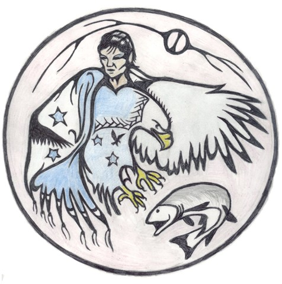

Strong roots for young learners
Kattawapiskak Elementary School (KES) is home to Attawapiskat's elementary students.
The school opened in 2014 after years of determined advocacy by the community and its young people for a safe, healthy place to learn. Today, KES is where children build strong foundations in reading, writing and math, alongside the Cree language and the teachings of our community.
Learning at KES
- Literacy and numeracy every day
- Cree language and culture in the classroom
- Learning outdoors and on the land through the seasons
- Support for every learner's needs and wellbeing
- Families welcome as partners in their children's learning
Registering a child? Please contact the school or the Board Office for registration information.